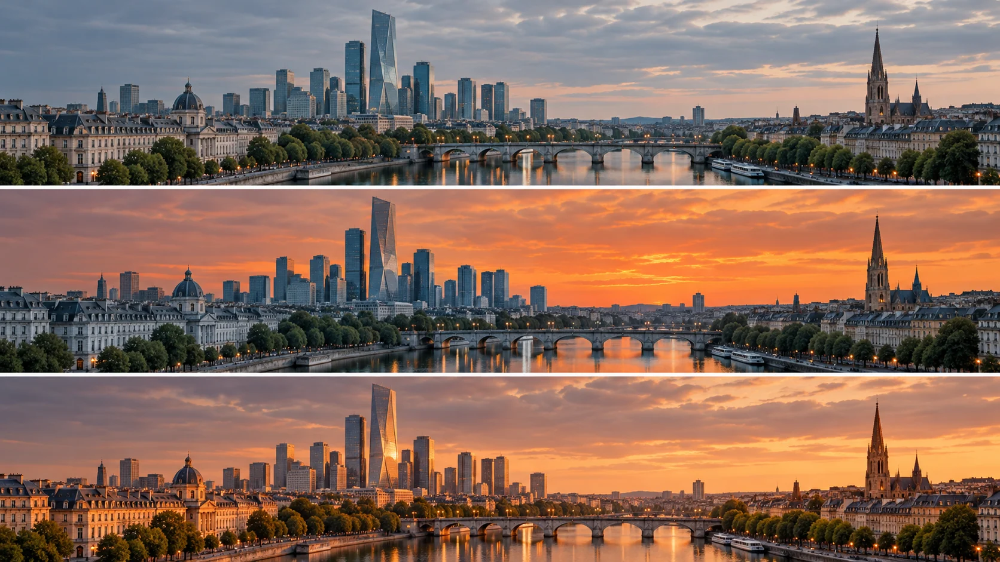

G32 · 중급 · 일반 드론
도시 스카이라인에 일몰 룩 만들기
영역별 색보정을 하면서 하늘과 건물, 반사광의 관계를 함께 맞추는 법을 배운다.
그림에서 확인할 세 가지하늘의 색을 바꾸면 건물도 함께 검토한다.
1차가운 기본 장면
맨 위는 하늘과 강, 건물이 비교적 차갑고 차분한 색을 공유한다. 특정 영역보다 장면 전체의 기존 색 관계를 먼저 읽는다.
2하늘만 따뜻해진 상태
가운데는 하늘이 주황색으로 바뀌지만 건물과 강은 푸른 기운이 강하다. 하늘의 변화가 아래 공간의 빛과 얼마나 연결되는지 살핀다.
3빛이 이어진 도시
맨 아래는 건물 면과 강의 반사에도 따뜻한 색이 나타난다. 주황색의 양보다 하늘과 지상의 빛이 하나의 시간대로 느껴지는지 비교한다.
촬영 설계
촬영을 이렇게 설계한다
전체 균형과 영역 보정을 나눈다
원문은 기본 노출과 채도를 다룬 뒤 하늘을 별도 영역으로 조절하는 흐름을 설명한다. 교육 적용에서는 전체 밝기 문제를 특정 영역의 색으로 덮지 않고 먼저 분리해 판단한다.
선택 영역의 경계를 확인한다
제작 설명은 하늘의 그라디언트와 추적, 밝기 선택을 다루며 불안정한 노이즈에 주의한다. 교육 적용에서는 경계가 구름이나 건물의 움직임에 따라 흔들리지 않는지 재생해서 확인한다.
다른 표면의 빛을 맞춘다
원문은 건물 쪽에도 따뜻한 빛을 더해 하늘과 연결하는 방법을 제시한다. 교육 적용에서는 모든 영역을 같은 색으로 덮기보다 빛을 받을 면과 반사가 생길 곳을 구별한다.
RawFilm과 Aram K가 도시 드론 장면에 일몰 분위기를 만드는 색보정 과정을 소개한다.
원본 영상도시 스카이라인에 일몰 룩 만들기
1. 하늘과 건물의 경계
원본의 보정 전후 예시에서 지붕과 구름 가장자리를 살핀다. 선택 영역이 흔들리거나 원치 않는 색이 번지는지 확인한다.
2. 빛의 방향과 색
하늘의 밝은 부분과 건물에 더해진 따뜻한 면을 비교한다. 색이 강한지보다 같은 빛을 받는 공간처럼 연결되는지 판단한다.
3. 시간에 따른 안정성
재생 중 하늘이나 건물의 색이 갑자기 바뀌는지 관찰한다. 한 프레임의 완성도와 전체 구간의 일관성을 따로 평가한다.
재생이 제한되면 원본 영상 새 창을 이용하세요.
제작진 설명 · 한국어 요약 번역
영역별 보정으로 일몰의 분위기를 구성하다
기본 보정
번역 요약: 설명은 먼저 채도 노드에서 채도를 100%까지 올리고 노출 노드에서 오프셋으로 블랙을 낮춘다.
블랙은 끝까지 내리지 않는다.
룩 노드는 병렬로 추가하며 예시에서는 파란 커브를 낮춘다.
하늘과 노이즈
하늘에 작은 그라디언트를 걸고 구름 선 안에 머물도록 추적한다.
밝기 선택 뒤에는 노이즈가 춤추듯 흔들리지 않는지 점검한다.
일몰과 한계
빛줄기 플러그인과 색온도 상승으로 일몰 분위기를 만들고 건물 색을 하늘에 맞출 수 있다.
이는 후반 룩 제작이며 촬영 당시 빛의 증거는 아니다.
Kling 프롬프트단문 인과 체인 · 16:9
내가 직접 만들어 본다
하늘이 따뜻해지면 햇빛을 받는 건물 면과 강의 반사가 같은 순서로 따뜻해지는 인과를 지시한다.
- S01강을 낀 도시 위로 차분한 푸른 하늘이 펼쳐져 있다.
- S02영상은 하나의 연속 쇼트다.
- S03화면에 드론 기체는 나오지 않는다.
- S04처음 10초 동안 카메라가 강 위에서 도시를 향해 천천히 전진한다.
- S05하늘과 건물과 강은 모두 차가운 색을 공유한다.
- S06다음 10초 동안 지평선 쪽 하늘이 주황색으로 물든다.
- S07하늘이 물들자 햇빛이 건물의 한쪽 면에 닿는다.
- S08햇빛을 받은 면만 따뜻해지고 반대쪽 면은 차갑게 남는다.
- S09건물이 따뜻해지자 강 위에 그 빛이 반사된다.
- S10마지막 10초 동안 카메라는 하늘과 건물과 강을 한 화면에 담는다.
- S11그 결과 모든 면이 같은 시간대의 빛으로 읽힌다.
- S12하늘의 경계는 건물 윤곽을 따라 흔들리지 않는다.
- S13카메라는 끝까지 같은 속도로 전진한다.
[네거티브]
- 처음부터 하늘이 강한 주황색인 것 금지
- 중간에 컷이 생기며 장면이 바뀌는 것 금지
- 화면에 드론 기체가 나타나는 것 금지
- 카메라가 도시에서 멀어지거나 옆으로 흐르는 것 금지
- 하늘만 따로 다른 색으로 떠 보이는 것 금지
- 하늘 전체가 한순간에 같은 색으로 바뀌는 것 금지
- 건물이 하늘과 무관하게 차가운 색으로 남는 것 금지
- 모든 건물 면이 같은 주황색으로 덮이는 것 금지
- 강만 푸르게 남아 하늘과 단절되는 것 금지
- 하늘이나 강이 화면 밖으로 빠지는 것 금지
- 하늘과 지상의 빛 방향이 서로 어긋나 보이는 것 금지
- 하늘색이 건물 윤곽 밖으로 번지며 일렁이는 것 금지
- 카메라가 속도를 바꿔 색 변화와 뒤섞이는 것 금지
결과에서 볼 것
- 하늘이 따뜻해진 뒤 건물과 강이 순서대로 따라왔는가
- 햇빛을 받는 면과 받지 않는 면이 구별되었는가
- 하늘과 건물 경계가 흔들리지 않았는가